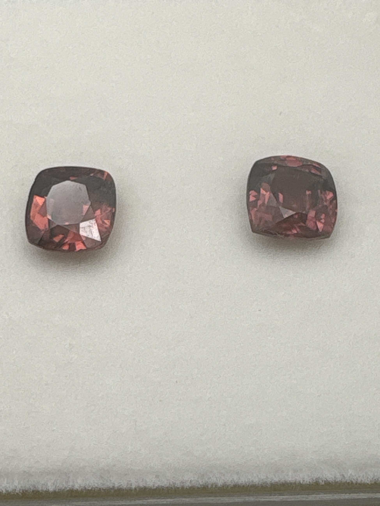

The Gem Drawer › No. 78

Two deep brownish-red cushion cuts with orange flashes, 2 ct-plus combined.
| Catalogue no. | #78 |
|---|---|
| As labeled | Red Zircon (Hyacinth Zircon) - PAIR, 2 stones in this box, see notes |
| Shape / cut | Cushion (both stones) |
| Weight | 2.00+ (combined, presumed) |
| Measurements | Not recorded |
| Colour | Deep brownish-red with orange flashes |
| Clarity / condition | Not recorded |
Interested in this stone, or in the collection as a whole? Terry VanWormer can answer questions about it.
Click here to inquireor email Terry directly at maxrebo34@gmail.com